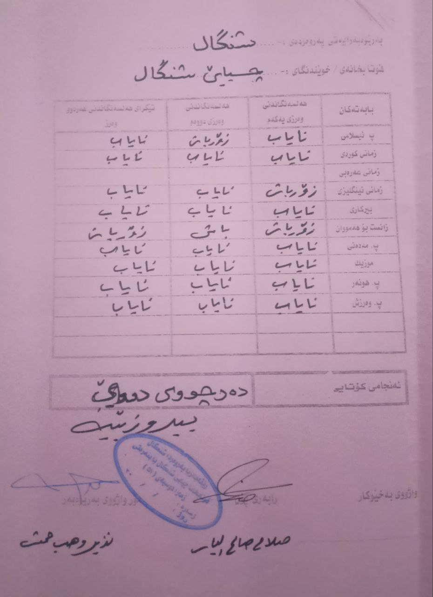
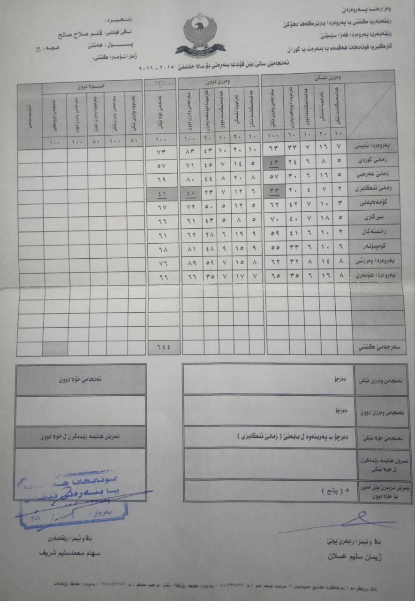
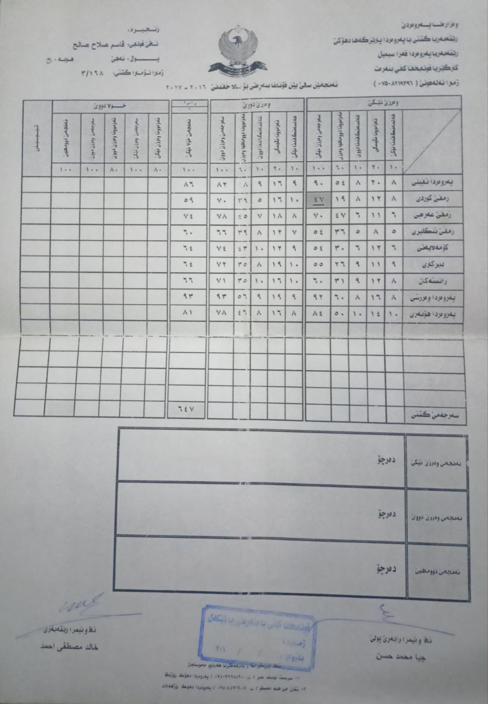
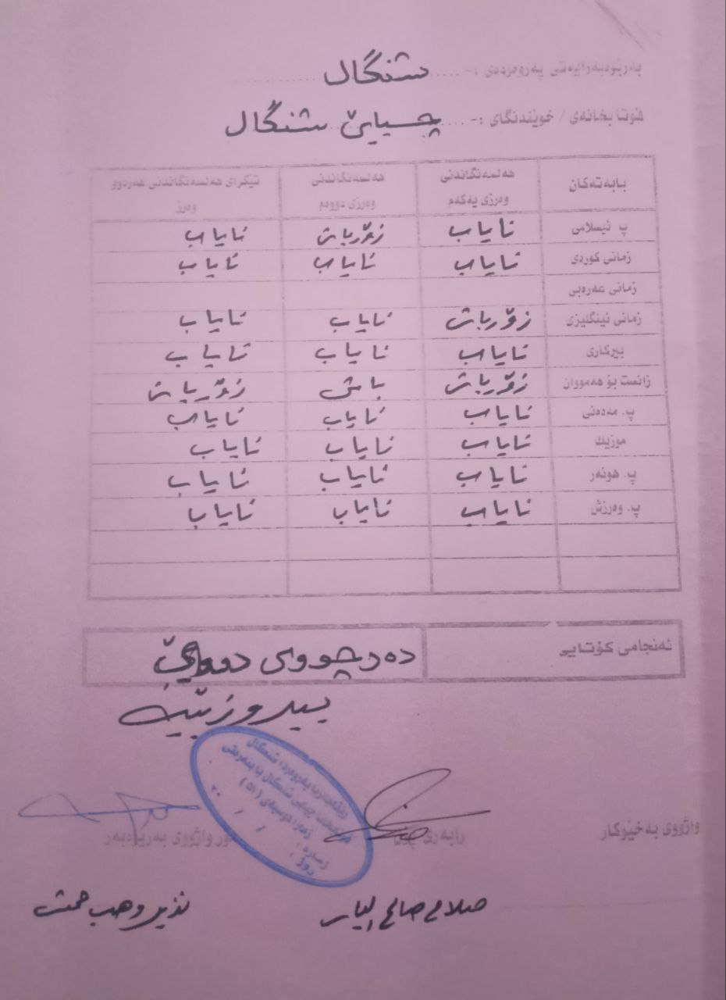

educational certificates
First grade
second grade
third grade

4th grade

5th grade
6th & 7th grade
In 2014, I finished 6th grade in Sinjar district, and because of the events of that year, I no longer have my 6th-grade certificate. As for my 7th-grade certificate, I also don’t know what happened to it, but in that year, which was the 2014-2015 academic year, I was studying in Erbil Governorate, and I don’t know what happened to that certificate either.
8th grade

9th grade

10th preparatory grade
11th preparatory grade
12th preparatory grade
graduation certificate
First grade
second grade
third grade
4th grade
5th grade
6th & 7th grade
In 2014, I finished 6th grade in Sinjar district, and because of the events of that year, I no longer have my 6th-grade certificate. As for my 7th-grade certificate, I also don’t know what happened to it, but in that year, which was the 2014-2015 academic year, I was studying in Erbil Governorate, and I don’t know what happened to that certificate either.